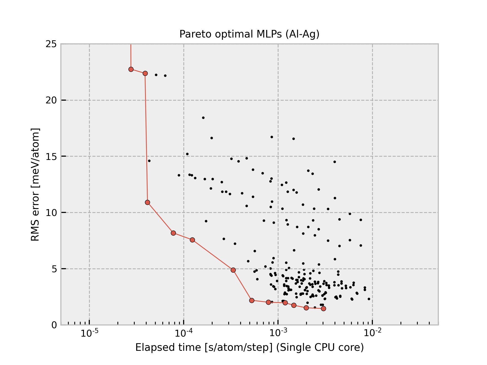

Al-2020-06-14-dataset-10000-all-icsd¶
{kind=link}
The current structure dataset comprises 10,000 structures generated from unique ICSD prototype structures composed of single elements with zero oxidation state. A more detailed procedure is found in Phys. Rev. B 99, 214108 (2019). The procedure to estimate interatomic potentials from the dataset is found in Phys. Rev. B 99, 214108 (2019) and Phys. Rev. B 102, 174104 (2020).
All Pareto optimal MLPs are available
here.
Name |
Time [ms] (1 core / 36 cores) |
RMSE [meV/atom] / [eV/ang.] |
|---|---|---|
pair-1 |
0.014 / 0.005 |
58.609 / 0.2690 |
pair-15 |
0.021 / 0.005 |
20.563 / 0.1155 |
pair-22 |
0.031 / 0.007 |
18.535 / 0.1077 |
pair-23 |
0.034 / 0.011 |
15.989 / 0.1029 |
pair-44 |
0.051 / 0.009 |
14.892 / 0.1011 |
pair-24 |
0.067 / 0.012 |
14.340 / 0.0950 |
pair-45 |
0.090 / 0.018 |
13.544 / 0.0937 |
pair-46 |
0.097 / 0.015 |
13.109 / 0.0920 |
pair-53 |
0.130 / 0.027 |
13.007 / 0.0919 |
pair-47 |
0.133 / 0.019 |
12.526 / 0.0909 |
pair-48 |
0.171 / 0.025 |
11.978 / 0.0902 |
pair-55 |
0.225 / 0.027 |
11.478 / 0.0895 |
gtinv-506 |
0.267 / 0.019 |
7.9648 / 0.0635 |
gtinv-590 |
0.278 / 0.020 |
7.2860 / 0.0611 |
gtinv-591 |
0.582 / 0.035 |
5.3876 / 0.0538 |
gtinv-742 |
0.691 / 0.040 |
4.4322 / 0.0465 |
gtinv-592 |
0.723 / 0.046 |
4.0884 / 0.0447 |
gtinv-791 |
0.753 / 0.043 |
3.8793 / 0.0423 |
gtinv-743 |
0.754 / 0.043 |
3.8792 / 0.0423 |
gtinv-792 |
0.822 / 0.046 |
3.8332 / 0.0416 |
gtinv-593 |
1.114 / 0.061 |
3.0401 / 0.0400 |
gtinv-596 |
1.979 / 0.100 |
2.7260 / 0.0384 |
gtinv-599 |
3.206 / 0.154 |
2.4844 / 0.0375 |
gtinv-611 |
3.729 / 0.169 |
2.4419 / 0.0390 |
gtinv-614 |
6.259 / 0.269 |
2.1956 / 0.0378 |
manual-2 |
10.092 / 0.457 |
2.1035 / 0.0366 |
manual-3 |
21.659 / 0.936 |
1.8419 / 0.0340 |
manual-1 |
28.691 / 1.220 |
1.7601 / 0.0331 |
Column “Time” shows the time required to compute the energy and forces for 1 MD step and 1 atom, which is estimated from a simulation of 10 runs for a structure with 284 atoms using a workstation with Intel(R) Xeon(R) CPU E5-2695 v4 @ 2.10GHz. Note that the MLPs should be carefully used for extreme structures. The MLPs often return meaningless values for them.